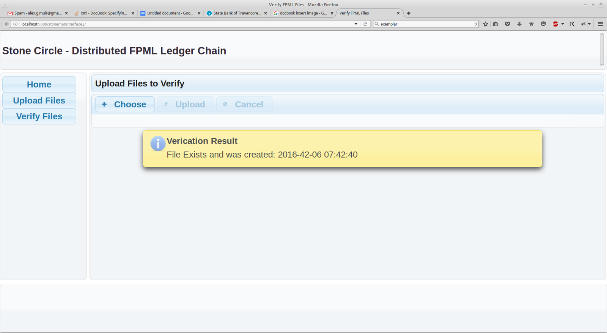

XML, blockchain and regulatory reporting
in the world of finance
Combining mature and modern technologies to drive innovation and regulatory compliance
Fintech
Blockchain
Hype
XML in Finance
- XML1.0 is very mature and stable
- Great tool support and able to read as plain text
- Great fit for archiving and reporting
- Existing financial standards: ISDA FpML, FixML etc.
Finance landscape
- Need to radically reinvent and optimise financial services to stay profitable
- Competition from supermarkets and tech companies
- Combination of low yields and high regulatory costs
Bank regulation
- Capital requirements
- Reserve requirements
- Financial reporting and disclosure requirements
- Large exposures restrictions
- Most regulation applies to "Fintech" as well
Blockchain in finance
- payments and FX: Coinbase, Mt Gox, Ripple
- settlements: R3, NXT... Kode1100
- Smart Contracts: UBS, ETH, Eris, DAO
Blockchain in detail
Blockchain history
- Oldest surviving blockchain 2500B.C.
- Islamic records in 7th Century
- Medici bank in the 14th and 15th Century
- IBM and first computers
- "Enterprise" DB
What is blockchain?
- asset database shared across a network
- All participants have their own copy
- security using public-private keys
- eventual consistency
- blockchain will store ALL of the transactions
- no way to delete stuff
Blockchain use cases
- To secure transactions: money transfers, ownership registers (land, DVLA etc)
- provenance (supply chain, source code)
- many wrong: diamonds, blood bank
challenges and opportunities
- scalability
- privacy
- outside of blockchain
- smart contracts
Stone man
Stone circle
Stone chain
Infrastructure
- Cloud VMs, CentOS7
- Oracle Java EE, primefaces
- Marklogic 8
- 1 to ∞ nodes
The Algorithm
- proprietary private consensus algorithm
- cryptography based on bitcoin + extensions
- adjustable difficulty
- (multiple) SHA-512 by default
- no 'coin' mining needed
- ethnographic research from from West Africa to avoid human bias against entropy
- reliable enterprise solutions for storage and availability
<block version="1"> <this>500251402261245FCB870657050AB1CAA5A5F137E25A77B5861EDD38964ED727</this> <prev>GENSIS893583B63FF73B0474CB42A1CBE7A96E1D8CE52854B4C876026BA453F</prev> (...) <file>58D226C6016DCE5B25133D7388FFE29757E5476609FFC3B9BE988B3FF8D2DF3D</file> <id>PUBLIC_KEY_USER_ID</id> <time>1462288317220</time> </block>
<chain>
<block c="2" hash="B37EF2958FE7B62C0D1532E394895FD51F7053FA8B1457ABAF01A7139F905AE5" type="top"/>
<block c="1" hash="500251402261245FCB870657050AB1CAA5A5F137E25A77B5861EDD38964ED727"/>
<block hash="GENSIS893583B63FF73B0474CB42A1CBE7A96E1D8CE52854B4C876026BA453F" type="gensis"/>
</chain>
Stonechain ops

File upload
Verification
